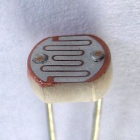
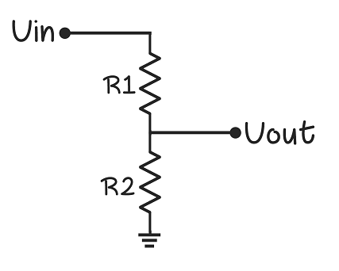

Sensors for automating games
Light Dependent Resistor(LDR)
An LDR is commonly used for wide range of applications because of it provides decently accurate information of the external lighting and at the same time economical. It is basically a light controlled resistor- which means that the resistance across it's terminals changes according to the light incident on it. This can be used in projects where you want to sense the lighting in the surrondings. One of it's common applications is to be used to turn on lights automatically in the evening.
Here's a video tutorial on how you can build such circuits.

How it works
It works on the principle of photo conductivity. When light is incident on top of a LDR, the elctronics and holes are seperated- hence the conductivity increases i.e., resistivity decreases. When the light is not incident, they are very few freely moving holes and electrons- so the conductivity is less i.e., the resistivity is high.
Circuit for LDR
Assume that LDR is connected at Z1 and Z2 is a resistor. As discussed in the previous chapter, the LDR can be used in a voltage divider circuit to convert this change in resistance because of the external light to change in voltage. We are doing this because the microcontroller can only detect the change in voltage.

Examples of application
An LDR can be used to detect the different of bright and dark regions on the screen. If you have a dark region, the LDR has high resistance and vice-versa. This is appropriately reflected in the values sensed by the microcontroller so that appropriate action can be taken.
This is used in the games Piano Tiles and Ready Steady Bang.
Source code for using LDR with Arduino
This is the code that you can use in Arduino to read the values from the LDR with the appropriate circuit. We will display the values returned by the LDR on the serial monitor so that we can observe the changes in the value returned in real time.
Let's setup serial communication first.
void setup()
{
// initialize serial communications at 9600 bps:
Serial.begin(9600);
}
Let's connect the LDR input to A0 pin on Arduino.
void loop()
{
// reading the value from sensor and storing it in a variable
sensorValue = analogRead(A0);
// print the output on serial monitor
Serial.print("Sensor Value = ");
Serial.println(sensorValue);
// use a delay to see values clearly
delay(20);
}
RGB Sensors
Instead of an LDR, we can also use an RGB sensor to differentiate colors on the screen. The additional advantage of the RGB sensor from the LDR is that, it can know the exact color on the screen unlike LDR with can you find the brightness of the color coming from the screen.
An RGB sensor can clearly differentiate between blue and green, whereas the same would be hard for an LDR to do.